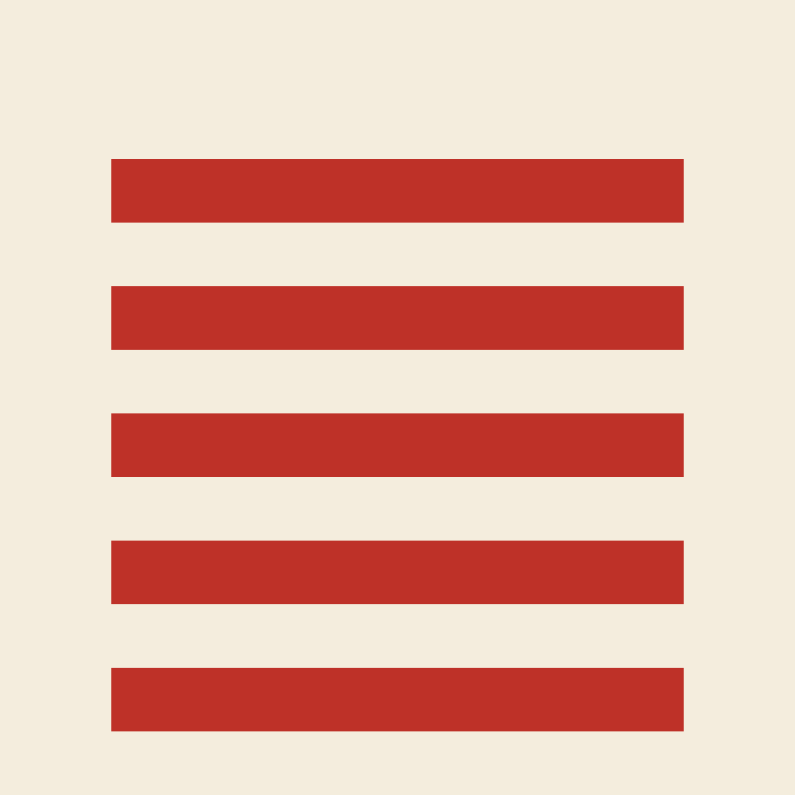

La Motha
Xmas Gravel Ride
Domenica 13 dicembre
Un anello di 41,2 km tra asfalto e sterrato compatto, una sosta con la cioccolata calda nel cuore di Motta e un Pasta Party finale al caldo per brindare insieme.
Ritrovo e arrivo
Centro PolivalenteVillanova di Motta di LivenzaPartenza alla francese
Dalle 9.30 alle 10.30Libera, quando vuoi nella fascia orariaPercorso
41,2 km · livello intermedioServe un allenamento di baseFondo
Asfalto e sterrato compattoPerfetto per gravel, MTB e all-roadRientro
Entro le 13.30Orario limite per il Pasta PartyQuota
15 €In contanti la mattina, al banco accoglienzaPercorso e ristori
- PartenzaCaffè di benvenuto al Polivalente
- Metà giroTè o cioccolata calda e panettone alla casetta della Pro Loco, in centro
- ArrivoPasta Party al coperto: pasta, acqua e vino inclusi
Iscrizione obbligatoria entro il 10 dicembre
Con il modulo al link nella bio di [@profilo]. Nel modulo puoi chiedere il menù vegetariano. Dopo l'iscrizione ricevi la traccia GPX via email o WhatsApp.
Casco omologato obbligatorio. Strade aperte al traffico: rispetta il Codice della Strada.#mottanatale


Flyer A5 (148×210 mm) con 3 mm di abbondanza, ingrandito. PDF: stampa/Flyer-GravelRide-A5.pdf.